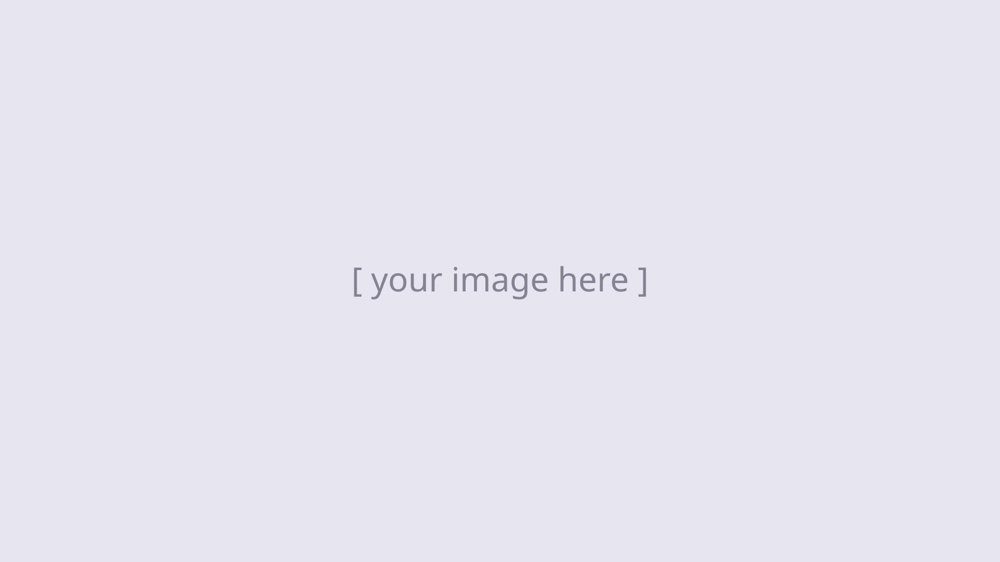

I always end up in cool places doing cool things.

Hi, I'm Stephy, a designer focused on branding.
I'm drawn to the fun side of branding: pop-ups, launches and brands you can step into. My favourite projects are the collaborative ones that get out into the world, especially if there's travel and new people involved.
Outside of design, I'm following the music.
- Based in
- Vancouver, BC
- Studying
- Visual Communication, Branding — IDEA School of Design
- Graduating
- Spring 2027
- Recognition
- Honourable Mention, Interactive/UX/UI — DesCan Vancouver Salazar Awards 2025
- Member
- RGD (Student)
(01) Collection Things I keep — drag them around
- 01.
- 02.
- 03.
- 04.
- 05.
- 06.
- 07.
- 01.[Name] – [short note]
- 02.[Name] – [short note]
- 03.[Name] – [short note]
- 04.[Name] – [short note]
- 05.[Name] – [short note]
- 06.[Name] – [short note]
- 07.[Name] – [short note]